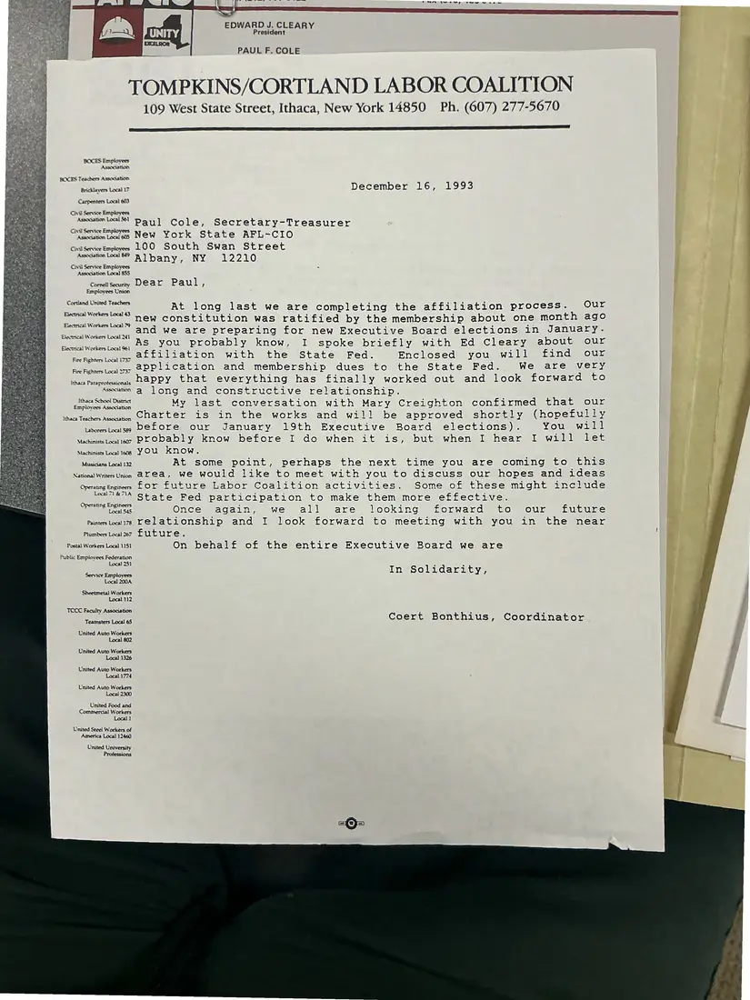

Letter, 1 page
Coert Bonthius to Paul Cole on completing affiliation
December 16, 1993
The coordinator reports that the membership ratified a new constitution about a month earlier and that the Labor Coalition is preparing for Executive Board elections. He encloses the application for affiliation with the state federation.
Download or cite this itemPages


(open zoom view)Read the page text (machine-read, mostly readable)
This text was generated automatically from the photograph and has not been corrected. The image is the authoritative record.
y wey wwe vee we ew EDWARD J. CLEARY President PAUL F. COLE TOMPKINS/CORTLAND LABOR COALITION 109 West State Street, Ithaca, New York 14850 Ph. (607) 277-5670 BOCES Employees Assocation BOCES Teachers Assocation Bricklayers Local 17 December 16, 1993 Carpenters Local 603 Civil Service Employees AsoaaponloalSsl Bay] Cole, Secretary-Treasurer Cuisenice Emplovess New York State AFL-CIO CwilSeniceEmpoyess LOO South Swan Street eA ibanyar NV 22.0 Civil Service Employees * Association Local 85S Cornell Security Dear Paul ? Employees Union Cortland United Teachers At long last we are completing the affiliation process. Our Electrical Workers Local 43 new constitution was ratified by the membership about one month ago and we are preparing for new Executive Board elections in January. As you probably know, I spoke briefly with Ed Cleary about our affiliation with the State Fed. Enclosed you will find our application and membership dues to the State Fed. We are very eee DADDY, that everything has finally worked out and look forward to asoaation Q@ Jong and constructive relationship. Reeser eee My last conversation with Mary Creighton confirmed that our ithaca Teachers Awoaanon Carter is in the works and will be approved shortly (hopefully Lborestoase Defore our January 19th Executive Board elections). You will MatinesLaier PLObably know before I do when it is, but when I hear I will let Machinists Local 16s YOU know. Musicians Local 132 At some point, perhaps the next time you are coming to this National WritesUnion ALC A, We would like to meet with you to discuss our hopes and ideas Operating Engines ELOY Future Labor Coalition activities. Some of these might include mal7£% State Fed participation to make them more effective. Daa anes Once again, we all are looking forward to our future Paintestoali7s Yelationship and I look forward to meeting with you in the near Plumbers Loaal 267 Eure. Postal Workers Local 1151 On behalf of the entire Executive Board we are Public Employees Federation Loca} 251 Electrical Workers Local 79 Electncal Workers Local 241 Electncal Workers Local 961 Fire Fighters Local 1737 Fire Fighters Local 2737 In Solidarity, Service Employees Local 200A Sheetmetal Workers Local 112 TCCC Faculty Association EEE Coert Bonthius, Coordinator United Auto Workers Local 802 United Auto Workers Local 1326 United Auto Workers. Local 1774 United Auto Workers Local 2300 United Food and Commeraal Workers Local 1 United Steel Workers of America Local 12460 United University Professions
See something wrong, or recognize a person or event? Send a correction. If you hold rights in this item or think it should not be public, write to the same address.